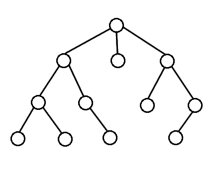

Overview
Breadth First Search(BFS) is one type of tree-searching algorithm. The idea is that this algorithm explores nodes in order of their depth. We start out at the root vertex, then explore all of the vertices with depth 1 first, and then vertices with depth 2, and so on and so forth. In other words, there is an order in which the traversal process is performed.

Algorithm
bfs_algorithm {
1. create a queue of vertices;
2. add root to the queue to start;
while queue is not empty {
3. get vertex from front of queue;
4. make sure this vertex has not been visited before;
5. look at it's value and do things as appropriate;
6. add the children of the vertex to the back of the queue;
7. mark the vertex as visited;
}
}
Implementation
Nodes of smaller depth that are closer to the root will be added first to the queue, and so because the queue is a FIFO data structure, these nodes of smaller depth will be visited before nodes that are further away from the root. In this way, you can see that the the BFS traversal algorithm expands its search radius in breadth over time, as the radius of searching away from the root gradually increases over time. This is a characteristic feature of the BFS algorithm.
BFS will reach any particular vertex with the minimum number of edges from the root source.